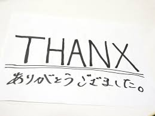

「THANX」
WANIMAの1stアルバム「Are You Coming ?」に収録された曲です。FM802の2015年11月のヘビーローテーションに選ばれました。「THANX」という 曲名
「TRACE」
WANIMAの1st EP「Think That…」に収録された曲で、1stアルバム 「Are You Coming ?」 にも収録されています。 「戦っている人」に向けて作られた曲で、くじけそうになってしまった時に聞いてもらって苦難を乗り越えていって欲しい、という思いで作られた曲です。
「1106」
WANIMAの1stミニアルバム「Can Not Behaved!!」に収録された曲です。
タイトルの「1106」はボーカルの松本健太さんの祖父の命日
11月初旬
を表しており、その漁師だった祖父に向けて作られた曲です。
プロモーションビデオも地元天草の海で撮影されたものです。
- 「HOME」という楽曲です。
- タオル、バンTなどがあります。
- 心に響く歌詞が好きです。
- WANIMAの上記以外のオススメは？
- WANIMAのグッズはどんなんものか？
- WANIMAのどこが好きですか？